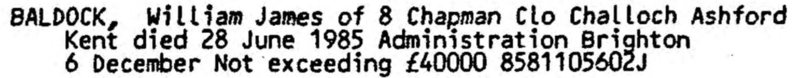
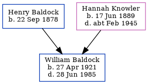

William James Baldock 1921 - 1985
[ Home ] | [ Calendar ] | [ Surnames Index ] | [ Family History ]A general builder's laborer and the younger of 2 children of Henry Baldock (a farm laborer) and Hannah Knowler, William Baldock, the second cousin once-removed on the mother's side of Nigel Horne, was born in Thanet, Kent, England on Apr 27, 19211,2,3.
Throughout his life, he lived at 2 Handville Green Cottages, Bridge, Kent, England on Sep 29, 19391; and at 8 Chapmans Close, Challock, Kent in 1985.
He died on Jun 28, 1985 in Ashford, Kent3.
Parents
- Henry was born on Sep 22, 1878
- Hannah Mary was born on Jun 17, 1889
Citations
- 1939 Register - Findmypast (was recorded at this address)
- England & Wales births 1837-2006 - Findmypast
- England & Wales deaths 1837-2007 - Findmypast
Media
William James Baldock - Probate

1939 Register - TNA/R39/1803/1803I/005/24
England & Wales births 1837-2006 - BMD/B/1921/2/AZ/000071/090
England & Wales deaths 1837-2007 - BMD/D/1985/7/74744913
Family Tree
Generated by Ged2Site. Last updated on Jul 20, 2025